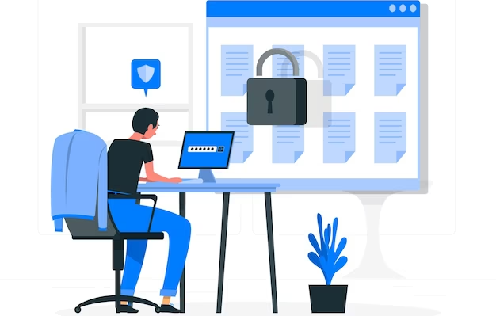

Emails are a fundamental aspect of modern communication, both in our personal and professional lives. They are used to share information, conduct business, and connect with colleagues and friends. However, with increased reliance on email, the likelihood of email impersonation and fraud has also risen. Email spoofing and phishing are two examples of malicious activities that can be carried out through email impersonation. These attacks can cause serious damage, such as data breaches, financial losses, and reputational damage to businesses.
To combat these threats, Domain-based Message Authentication, Reporting, and Conformance (DMARC) has emerged as a powerful protocol to secure email communication. DMARC provides email domain owners with a mechanism to protect their domain from email spoofing and phishing attacks. It is designed to prevent unauthorized use of legitimate email domains and domains that are similar to legitimate ones.

Attackers employ email impersonation tactics by sending deceptive messages that appear genuine, often imitating the domains of reputable institutions. This cunning manipulation convinces recipients to perceive the email as originating from a reliable source, ultimately coaxing them into compromising their own security through certain actions.
DMARC, an abbreviation for Domain-based Message Authentication, Reporting, and Conformance, serves as a safeguard against email spoofing and phishing attacks. By empowering domain owners to dictate the authentication process for their emails and determine the necessary course of action when authentication fails, it fortifies the overall security framework.
DMARC enhances existing email authentication methods, such as SPF and DKIM, by providing instructions to email servers regarding actions to take when an incoming email's SPF or DKIM does not match the sender's domain. These actions can range from labeling the email as spam to completely refusing its delivery.
Despite its robustness, DMARC can be affected by challenges such as misconfigured records or third-party services, which can hinder its effectiveness. It is crucial to conduct regular audits and make necessary adjustments.
Numerous entities have effectively adopted DMARC for safeguarding their brand and users. For instance, within six months of deploying DMARC, [Company X] achieved a remarkable 95% reduction in email impersonation.
In an ever-changing landscape of cyber threats, the importance of email security will persist. Safeguarding digital communication will heavily rely on the utilization of DMARC, as well as the progress made in AI and machine learning.
Finally, implementing DMARC records is a crucial step in preventing email impersonation. By establishing a policy for email authentication, organizations can prevent unauthorized parties from impersonating their domain and protect their brand reputation. DMARC offers several benefits, including increased email deliverability, enhanced security, and better visibility into email activity. advantage of this powerful tool to protect their email domain and ensure the authenticity of their emails. dmarcreport.com is a fantastic site to learn about the DMARC report.